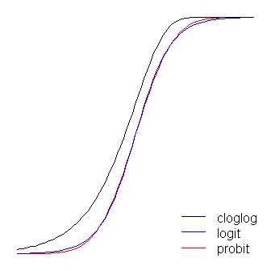

9 P test
9.1 P-Value Hacking
Results from a study can be analyzed in a variety of ways, and p-hacking refers to a practice where researchers select the analysis that yields a pleasing result. The p refers to the p-value, a ridiculously complicated statistical entity that’s essentially a measure of how surprising the results of a study would be if the effect you’re looking for wasn’t there.
P-hacking as a term came into use as psychology and some other fields of science were experiencing a kind of existential crisis. Seminal findings were failing to replicate. Absurd results (ESP is real!) were passing peer review at well-respected academic journals. Efforts were underway to test the literature for false positives and the results weren’t looking good. Researchers began to realize that the problem might be woven into some long-standing and basic research practices
Exploiting what they called “researcher degrees of freedom”: the little decisions that scientists make as they’re designing a study and collecting and analyzing data. These choices include things like which observations to measure, which variables to compare, which factors to combine, and which ones to control for. Unless researchers have committed to a methodology and analysis plan in advance by preregistering a study, they are, in practice, free to make (or even change) these calls as they go.
This kind of fiddling around allows researchers to manipulate their study conditions until they get the answer that they want.
Even if you don’t cheat, it’s still a moral error to misanalyze data on a problem of consequence.
At its core, p-hacking is really about confirmation bias—the human tendency to seek and preferentially find evidence that confirms what we’d like to believe, while turning a blind eye to things that might contradict our preferred truths.
People in power don’t understand the inevitability of p-hacking in the absence of safeguards against it.
We all p-hack, to some extent, every time we set out to understand the evidence in the world around us. If there’s a takeaway here, it’s that science is hard—and sometimes our human foibles make it even harder.
Testing abused to create misleading results. This is a technique known colloquially as ‘p-hacking’. It is a misuse of data analysis to find patterns in data that can be presented as statistically significant when in fact there is no real underlying effect.
One of the most common ways in which data analysis is misused to generate statistically significant results where none exists, and is one which everyone reporting on science should remain vigilant against.
Statistical P-hacking explained
Taleb
We present the expected values from p-value hack- ing as a choice of the minimum p-value among m independents tests, which can be considerably lower than the “true” p-value, even with a single trial, owing to the extreme skewness of the meta-distribution. We first present an exact probability distribution (meta- distribution) for p-values across ensembles of statistically iden- tical phenomena. We derive the distribution for small samples 2 < n ≤ n ∗ ≈ 30 as well as the limiting one as the sample size n becomes large. We also look at the properties of the “power” of a test through the distribution of its inverse for a given p-value and parametrization. The formulas allow the investigation of the stability of the reproduction of results and “p-hacking” and other aspects of meta-analysis. P-values are shown to be extremely skewed and volatile, regardless of the sample size n, and vary greatly across repetitions of exactly same protocols under identical stochastic copies of the phenomenon; such volatility makes the minimum p value diverge significantly from the “true” one. Setting the power is shown to offer little remedy unless sample size is increased markedly or the p-value is lowered by at least one order of magnitude.
Taleb (2018) P-Value Hacling (pdf)
Simmons
In this article, we accomplish two things. First, we show that despite empirical psychologists’ nominal endorsement of a low rate of false-positive findings (≤ .05), flexibility in data collection, analysis, and reporting dramatically increases actual false-positive rates. In many cases, a researcher is more likely to falsely find evidence that an effect exists than to correctly find evidence that it does not. We present computer simulations and a pair of actual experiments that demonstrate how unacceptably easy it is to accumulate (and report) statistically significant evidence for a false hypothesis. Second, we suggest a simple, low-cost, and straightforwardly effective disclosure-based solution to this problem. The solution involves six concrete requirements for authors and four guidelines for reviewers, all of which impose a minimal burden on the publication process.
Simmons (2011) False positive psychology (pdf)
Simonsohn
Because scientists tend to report only studies (publication bias) or analyses (p-hacking) that “work”, readers must ask, “Are these effects true, or do they merely reflect selective reporting?” We introduce p-curve as a way to answer this question. P-curve is the distribution of statistically significant p-values for a set of studies (ps < .05). Because only true effects are expected to generate right-skewed p-curves – containing more low (.01s) than high (.04s) significant p-values – only right-skewed p-curves are diagnostic of evidential value. By telling us whether we can rule out selective reporting as the sole explanation for a set of findings, p-curve offers a solution to the age-old inferential problems caused by file-drawers of failed studies and analyses.
Simonsohn (2014) P-Curve (pdf)
Wikipedia
Data dredging (or data fishing, data snooping, data butchery), also known as significance chasing, significance questing, selective inference, and p-hacking[1] is the misuse of data analysis to find patterns in data that can be presented as statistically significant, thus dramatically increasing and understating the risk of false positives. This is done by performing many statistical tests on the data and only reporting those that come back with significant results.
The process of data dredging involves testing multiple hypotheses using a single data set by exhaustively searching—perhaps for combinations of variables that might show a correlation, and perhaps for groups of cases or observations that show differences in their mean or in their breakdown by some other variable.
Conventional tests of statistical significance are based on the probability that a particular result would arise if chance alone were at work, and necessarily accept some risk of mistaken conclusions of a certain type (mistaken rejections of the null hypothesis). This level of risk is called the significance. When large numbers of tests are performed, some produce false results of this type; hence 5% of randomly chosen hypotheses might be (erroneously) reported to be statistically significant at the 5% significance level, 1% might be (erroneously) reported to be statistically significant at the 1% significance level, and so on, by chance alone. When enough hypotheses are tested, it is virtually certain that some will be reported to be statistically significant (even though this is misleading), since almost every data set with any degree of randomness is likely to contain (for example) some spurious correlations. If they are not cautious, researchers using data mining techniques can be easily misled by these results.
Data dredging is an example of disregarding the multiple comparisons problem. One form is when subgroups are compared without alerting the reader to the total number of subgroup comparisons examined.
Head
A focus on novel, confirmatory, and statistically significant results leads to substantial bias in the scientific literature. One type of bias, known as “p-hacking,” occurs when researchers collect or select data or statistical analyses until nonsignificant results become significant. Here, we use text-mining to demonstrate that p-hacking is widespread throughout science. We then illustrate how one can test for p-hacking when performing a meta-analysis and show that, while p-hacking is probably common, its effect seems to be weak relative to the real effect sizes being measured. This result suggests that p-hacking probably does not drastically alter scientific consensuses drawn from meta-analyses.
9.2 Bootstrapping instead of p-values
Buisson
P-values don’t mean what people think they mean; they rely on hidden assumptions that are unlikely to be fulfilled; they detract from the real questions. Here’s how to use the Bootstrap in R and Python instead
There are many reasons why you should abandon p-values, and I’ll examine three of the main ones here:
They don’t mean what people think they mean
They rely on hidden assumptions that are unlikely to be fulfilled
They detract from the real questionsBuisson (2021) Ditch p-values. Use Bootstrap confidence intervals instead
9.3 Probit
A standard linear model (e.g., a simple regression model) can be thought of as having two ‘parts’. These are called the structural component and the random component. For example:
\[Y=β_0+β_1 X+ε\]
where
\(ε∼N(0,σ^2)\)
The first two terms (that is, \(β_0 + β_1 X\)) constitute the structural component, and the \(ε\) (which indicates a normally distributed error term) is the random component.
When the response variable is not normally distributed (for example, if your response variable is binary) this approach may no longer be valid.
The generalized linear model (GLiM) was developed to address such cases, and logit and probit models are special cases of GLiMs that are appropriate for binary variables (or multi-category response variables with some adaptations to the process).
A GLiM has three parts, a structural component, a link function, and a response distribution.
For example:
\[g(μ)=β_0+β_1 X\]
Here \(β_0 + β_1 X\) is again the structural component, \(g()\) is the link function, and \(μ\) is a mean of a conditional response distribution at a given point in the covariate space.
The way we think about the structural component here doesn’t really differ from how we think about it with standard linear models; in fact, that’s one of the great advantages of GLiMs. Because for many distributions the variance is a function of the mean, having fit a conditional mean (and given that you stipulated a response distribution), you have automatically accounted for the analog of the random component in a linear model (N.B.: this can be more complicated in practice).
The link function is the key to GLiMs: since the distribution of the response variable is non-normal, it’s what lets us connect the structural component to the response– it ‘links’ them (hence the name). It’s also the key to your question, since the logit and probit are links, and understanding link functions will allow us to intelligently choose when to use which one. Although there can be many link functions that can be acceptable, often there is one that is special. Without wanting to get too far into the weeds (this can get very technical) the predicted mean, \(μ\), will not necessarily be mathematically the same as the response distribution’s canonical location parameter; the link function that does equate them is the canonical link function. The advantage of this "is that a minimal sufficient statistic for \(β\). The canonical link for binary response data (more specifically, the binomial distribution) is the logit. However, there are lots of functions that can map the structural component onto the interval (0,1)(0,1), and thus be acceptable; the probit is also popular, but there are yet other options that are sometimes used (such as the complementary log log, \(ln(−ln(1−μ))\), often called cloglog). Thus, there are lots of possible link functions and the choice of link function can be very important. The choice should be made based on some combination of:
- Knowledge of the response distribution,
- Theoretical considerations, and
- Empirical fit to the data.
These considerations can be used to guide your choice of link. To start with, if your response variable is the outcome of a Bernoulli trial (that is, 0 or 1), your response distribution will be binomial, and what you are actually modeling is the probability of an observation being a 1 (that is, \(π(Y=1)\). As a result, any function that maps the real number line, \((−∞,+∞)\) to the interval \((0,1)\) will work.
If you are thinking of your covariates as directly connected to the probability of success, then you would typically choose logistic regression because it is the canonical link. However, consider the following example: You are asked to model high_Blood_Pressure as a function of some covariates. Blood pressure itself is normally distributed in the population. Clinicians dichotomized it during the study (that is, they only recorded ‘high-BP’ or ‘normal’). In this case, probit would be preferable a-priori for theoretical reasons. Your binary outcome depends on a hidden Gaussian variable. Another consideration is that both logit and probit are symmetrical, if you believe that the probability of success rises slowly from zero, but then tapers off more quickly as it approaches one, the cloglog is called for.
Lastly, note that the empirical fit of the model to the data is unlikely to be of assistance in selecting a link, unless the shapes of the link functions in question differ substantially (of which, the logit and probit do not). For instance, consider the following simulation:
set.seed(1)
probLower = vector(length=1000)
for(i in 1:1000){
x = rnorm(1000)
y = rbinom(n=1000, size=1, prob=pnorm(x))
logitModel = glm(y~x, family=binomial(link="logit"))
probitModel = glm(y~x, family=binomial(link="probit"))
probLower[i] = deviance(probitModel)<deviance(logitModel)
}
sum(probLower)/1000
[1] 0.695Even when we know the data were generated by a probit model, and we have 1000 data points, the probit model only yields a better fit 70% of the time, and even then, often by only a trivial amount. Consider the last iteration:
deviance(probitModel)
[1] 1025.759
deviance(logitModel)
[1] 1026.366
deviance(logitModel)-deviance(probitModel)
[1] 0.6076806The reason for this is simply that the logit and probit link functions yield very similar outputs when given the same inputs.

The logit and probit functions are practically identical, except that the logit is slightly further from the bounds when they ‘turn the corner’. (Note that to get the logit and the probit to align optimally, the logit’s \(β_1\) must be \(≈1.7\) times the corresponding slope value for the probit. In addition, I could have shifted the cloglog over slightly so that they would lay on top of each other more, but I left it to the side to keep the figure more readable. Notice that the cloglog is asymmetrical whereas the others are not; it starts pulling away from 0 earlier, but more slowly, and approaches close to 1 and then turns sharply.
A couple more things can be said about link functions. First, considering the identity function \((g(η)=ηg(\eta)=\eta)\) as a link function allows us to understand the standard linear model as a special case of the generalized linear model (that is, the response distribution is normal, and the link is the identity function). It’s also important to recognize that whatever transformation the link instantiates is properly applied to the parameter governing the response distribution (that is, \(μ\)), not the actual response data. Finally, because in practice we never have the underlying parameter to transform, in discussions of these models, often what is considered to be the actual link is left implicit and the model is represented by the inverse of the link function applied to the structural component instead. That is:
\[μ=g^{−1}(β_0+β_1 X)\]
For instance, logistic regression is usually represented:
\[π(Y)=\frac{exp(β_0 + β_1 X)}{1+exp(β_0 + β_1 X)}\]
instead of:
\[ln(\frac{(π(Y)}{1−π(Y)}) = β_0 + β_1 X\]
For a quick and clear, but solid, overview of the generalized linear model, see chapter 10 of Fitzmaurice, Laird, & Ware (2004), For how to fit these models in R, check out the documentation for the function ?glm in the base package.
(One final note added later:) I occasionally hear people say that you shouldn’t use the probit, because it can’t be interpreted. This is not true, although the interpretation of the betas is less intuitive. With logistic regression, a one unit change in \(X_1\) is associated with a \(β_1\) change in the log odds of ‘success’ (alternatively, an \(exp(β_1)\)-fold change in the odds), all else being equal. With a probit, this would be a change of \(β_1 z\)’s. (Think of two observations in a dataset with \(z\)-scores of 1 and 2, for example.) To convert these into predicted probabilities, you can pass them through the normal CDF, or look them up on a \(z\)-table.